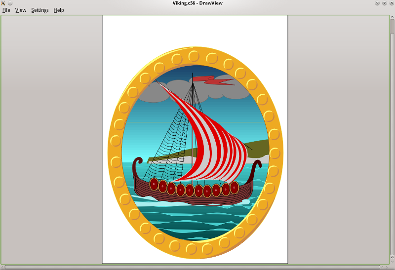

In Great Britain, as well as the Commonwealth, the Acorn/RISC OS platform used to play an imortant role during the 90s and early 2000s. Being side-lined and becoming more or less a niche operating system doesn't take away the value of legacy Acorn/RISC OS graphics and files.
While UniConvertor offers an import filter for AFF files, its capabilties are severely limited. Whether an AFF file can be imported into Scribus using UniConvertor remains a game of chance.
Here's where DrawView comes to the rescue. DrawView can open all Acorn Draw file types (AFF, C4B, C56, CC3). Moreover, DrawView can convert Acorn Draw files into either PostScript or PDF, and the export results can be flawlessly imported into Scribus.
|  |
Unfortunately, the availability of the DrawView source code has escaped the attention of most Linux distributions as well as build experts for other operating systems, so you probably have to build the program yourself. Apart from the usual build tools (e.g., gcc++ on Linux) you also need the Qt4 and Qt4 devel packages.